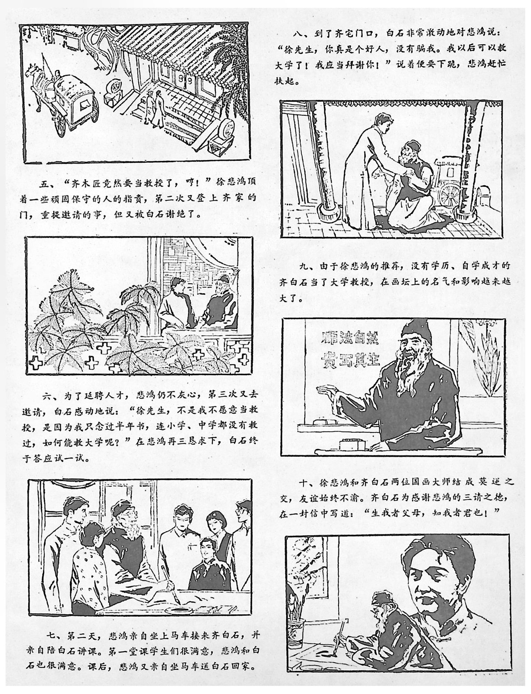

张连瑞绘画；魏城改编 《人事》1986年第5期（总第8期），封三
徐悲鸿三请齐白石 (续)
Xu Beihong Invites Qi Baishi Three Times (continued)
- Panel text
- “齐木匠竟然要当教授了，哼！”徐悲鸿顶着一些顽固保守的人的指责，第二次又登上齐家的门，重提邀请的事，但又被白石谢绝了。
“Carpenter Qi, a professor? Hmph!” Braving the reproaches of some obstinate conservatives, Xu Beihong called at the Qi house a second time and renewed the invitation, but again Baishi declined. - 为了延聘人才，悲鸿仍不灰心，第三次又去邀请，白石感动地说：“徐先生，不是我不愿意当教授，是因为我只念过半年书，连小学、中学都没有教过，如何能教大学呢？”在悲鸿再三恳求下，白石终于答应试一试。
Determined to recruit talent, Beihong did not lose heart and went a third time. Moved, Baishi said: “Mr Xu, it isn't that I don't want to be a professor. I only had half a year of schooling and have never taught even primary or middle school — how could I teach at a university?” At Beihong's repeated urging, Baishi at last agreed to try. - 第二天，悲鸿亲自坐上马车接来齐白石，并亲自陪白石讲课。第一堂课学生们很满意，悲鸿和白石也很满意。课后，悲鸿又亲自坐马车送白石回家。
The next day Beihong came in a horse carriage to fetch Qi Baishi himself, and sat with him through his lecture. The students were very pleased with the first class, and so were Beihong and Baishi. Afterwards Beihong again took Baishi home in the carriage himself. - 到了齐宅门口，白石非常激动地对悲鸿说：“徐先生，你真是个好人，没有骗我。我以后可以教大学了！我应当拜谢你！”说着便要下跪，悲鸿赶忙扶起。
At the gate of his house Baishi, deeply moved, said to Beihong: “Mr Xu, you really are a good man — you didn't deceive me. From now on I can teach at a university! I must bow to thank you!” He made to kneel, and Beihong hurried to raise him up. - 由于徐悲鸿的推荐，没有学历、自学成才的齐白石当了大学教授，在画坛上的名气和影响越来越大了。
Thanks to Xu Beihong's recommendation, the self-taught Qi Baishi, with no formal qualifications, became a university professor, and his fame and influence in the art world grew and grew. - 徐悲鸿和齐白石两位国画大师结成莫逆之交，友谊始终不渝。齐白石为感谢悲鸿的三请之德，在一封信中写道：“生我者父母，知我者君也！”
The two masters of Chinese painting became the closest of friends, and their friendship never wavered. To thank Beihong for the kindness of his three invitations, Qi Baishi wrote in a letter: “My parents gave me life; it is you who understood me!”
- “齐木匠竟然要当教授了，哼！”徐悲鸿顶着一些顽固保守的人的指责，第二次又登上齐家的门，重提邀请的事，但又被白石谢绝了。
- Description
- Picture story, panels 5–10: Xu returns twice more; Qi, who never finished primary school, accepts, becomes a professor, and the two become lifelong friends.
- Artists
- Zhang Lianrui 张连瑞 (drawn); Wei Cheng 魏城 (adapted)
- Published in
- 《人事》1986年第5期（总第8期）, inside back cover
- Themes
- Talent and its neglect · Exemplary history · Picture stories (连环画)

Cite
Zhang Lianrui and Wei Cheng, “徐悲鸿三请齐白石 (续)” [Xu Beihong Invites Qi Baishi Three Times (continued)], Renshi (Personnel) 《人事》, 1986, no. 5, inside back cover.